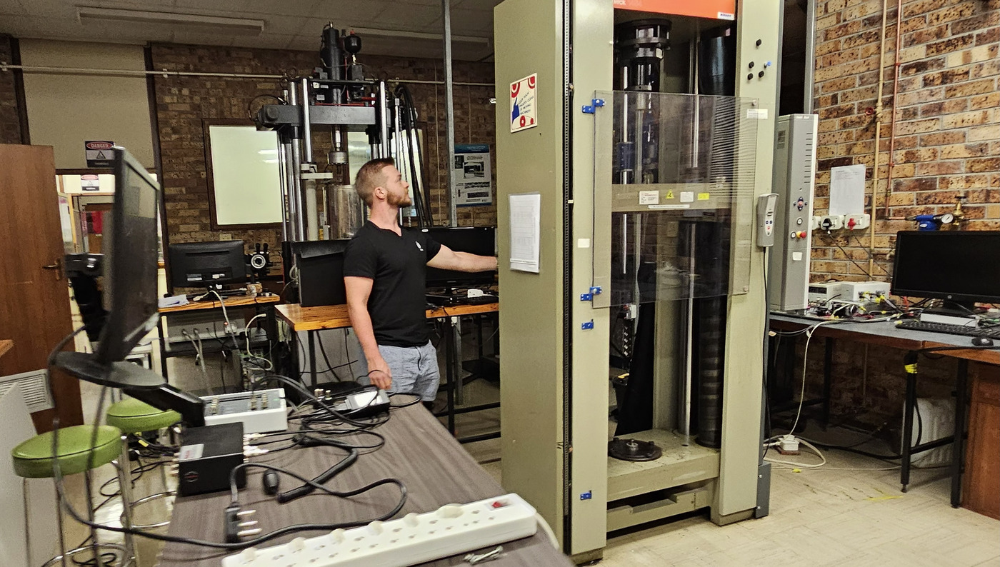

Laboratory engineering
Rondebosch, Cape Town | Jun 2022 – present

My first involvement with the Centre for Materials Engineering was in June 2022 when I did a six-week vacation work (internship) with them. I was then offered a place to do part-time lab work, which I did alongside completing my undergrad and continued to do alongside my Masters. With time, increased experience and capability has led to increased responsibilities. This role generally took between eight and twenty hours per week but was dependent on need. The following are some of the responsibilities I had in this role.